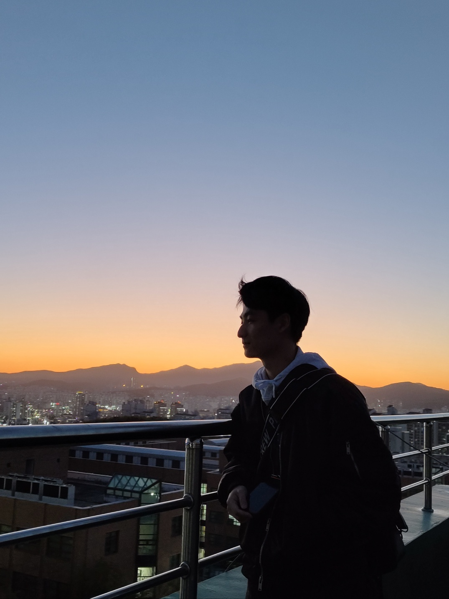

이름: 장태종
학번: 32193928
학과: 소프트웨어학과
취미: 게임, guitar, 농구
진로: 게임 개발
학번: 32193928
학과: 소프트웨어학과
취미: 게임, guitar, 농구
진로: 게임 개발
단국대 소프트웨어학과에 재학중인 장태종 이라고 합니다.
취미는 게임(LOL, Battle Ground 등등), 스포츠(대표적으로 농구), 악기(guitar)를 하고 있습니다.
진로는 게임 개발 방향으로 생각하고 있으며 PC게임 개발에 관심이 많습니다.
잘부탁드립니다.